Você só conheceu esta versão do planeta.
Os continentes ocupam estas posições. O clima segue estes padrões. Uma vida inteira de observação confirma tudo isso.
E é justamente esse o problema.
Uma vida humana é curta demais para medir aquilo que muda devagar.
Familiaridade é uma péssima medida de permanência.
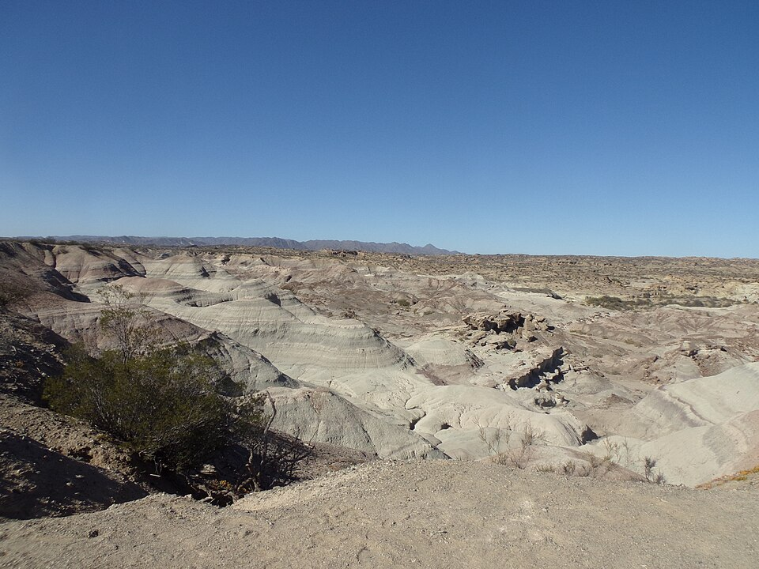
Ischigualasto · paisagem atualSAN JUAN · ARGENTINA · PRESENTE
Ischigualasto
Seria conveniente se as rochas simplesmente contassem o que aconteceu aqui.
Elas não contam.
Preservam sedimentos, estruturas, fósseis e sinais químicos — fragmentos de processos que aconteceram há milhões de anos.
O que vemos hoje não é a paisagem do Triássico. É o resultado atual de tudo o que foi depositado, soterrado, transformado, exposto e erodido desde então.
As rochas são a evidência. O ambiente antigo é a reconstrução.
Nota
A paisagem atual de Ischigualasto não é a paisagem do Triássico. Ela resulta de milhões de anos de deposição, soterramento, transformação e erosão. O ambiente antigo é inferido das rochas e dos fósseis.
≈ 251,9 MILHÕES DE ANOS
Sobreviver e se recuperar são coisas diferentes.
O Triássico começa depois da maior extinção em massa conhecida, há cerca de 251,9 milhões de anos.
Os grupos que atravessaram a crise encontraram espaço livre, e também um ambiente ainda muito perturbado. A recuperação dos ecossistemas levou milhões de anos e não foi igual para todos.
Quem sobreviveu não estava a caminho de lugar nenhum. A ideia de uma trajetória, com ponto de partida e de chegada, é uma leitura que fazemos depois.
Nota
O limite Permiano–Triássico é datado em cerca de 251,9 milhões de anos. A recuperação dos ecossistemas foi gradual e desigual, com ritmos diferentes entre grupos e regiões, e o início do Triássico ainda registra fortes perturbações ambientais.
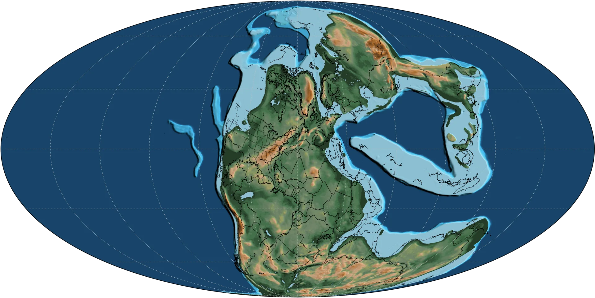
Reconstrução paleogeográfica provisóriaPANGEIA · ≈ 250 MILHÕES DE ANOS
Um supercontinente não é um ambiente único.
A maior parte das terras emersas formava Pangeia, cercada pelo oceano Panthalassa.
No mapa, é uma forma só, fácil de reconhecer. Na prática, distâncias continentais enormes, circulação atmosférica e forte sazonalidade davam condições muito diferentes de uma região para outra.
Quem vivia perto de um rio ou da costa e quem vivia no interior, longe do mar, não tinham o mesmo mundo.
Um contorno só convida a imaginar uma experiência só.
Convém recusar o convite.
Nota
Reconstrução paleogeográfica aproximada, para cerca de 250 Ma. As posições dos continentes são sustentadas por evidências geológicas e paleomagnéticas; costas, relevo e detalhes regionais envolvem reconstrução e incerteza.
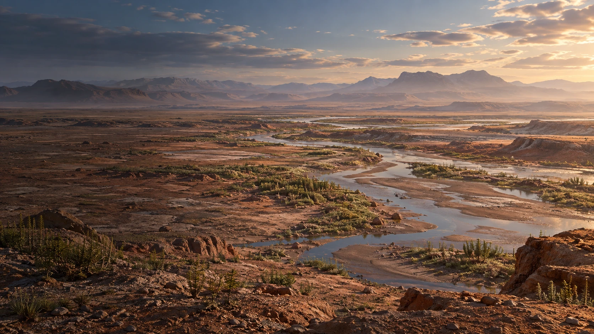
O interior era seco.
Grandes regiões do interior de Pangeia eram áridas ou semiáridas e passavam por forte sazonalidade.
É a imagem que muita gente já traz pronta, e ela está certa.
O problema é parar nela.
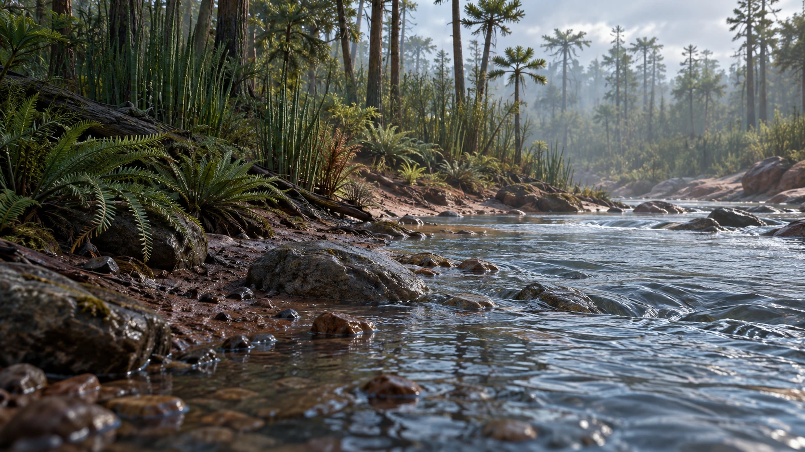
Rios complicam o quadro.
Sistemas fluviais e planícies de inundação aparecem em depósitos triássicos de diferentes lugares.
Um rio transporta sedimento, muda o terreno por onde passa e cria condições novas para a vida. Dentro do mesmo continente, um interior seco e um vale com água eram lugares muito diferentes para existir.
A primeira imagem não estava errada.
Estava incompleta — e imagens incompletas costumam parecer completas.
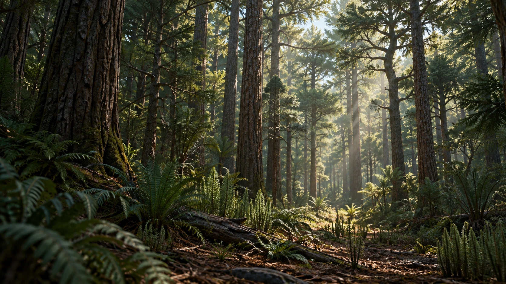
Pangeia nunca foi uma paisagem só.
Onde água, clima e solo permitiam, a vegetação respondia.
Regiões mais úmidas conviviam com áreas abertas, sazonais e secas, todas dentro do mesmo supercontinente.
Com esta cena são três ambientes, e três é pouco para um supercontinente.
Nenhuma dessas imagens é Pangeia.
Cada uma é uma amostra dela.
TRIÁSSICO SUPERIOR · HÁ CERCA DE 233 MILHÕES DE ANOS
Mais antigo não quer dizer primeiro.
Os registros mais antigos e bem sustentados de dinossauros datam de cerca de 233 milhões de anos, no Triássico Superior.
Cada um prova que o grupo já existia naquela época.
Nenhum prova que a história começou ali.
A diferença entre o mais antigo que encontramos e o primeiro que existiu é justamente o que o registro fóssil não mede.
Nota
Os fósseis mais antigos conhecidos estabelecem uma idade mínima para a presença dos dinossauros, não o momento em que o grupo surgiu. Os registros mais antigos bem sustentados se situam em cerca de 233–227 milhões de anos. Não há consenso para apontar uma única espécie como “o primeiro dinossauro”.
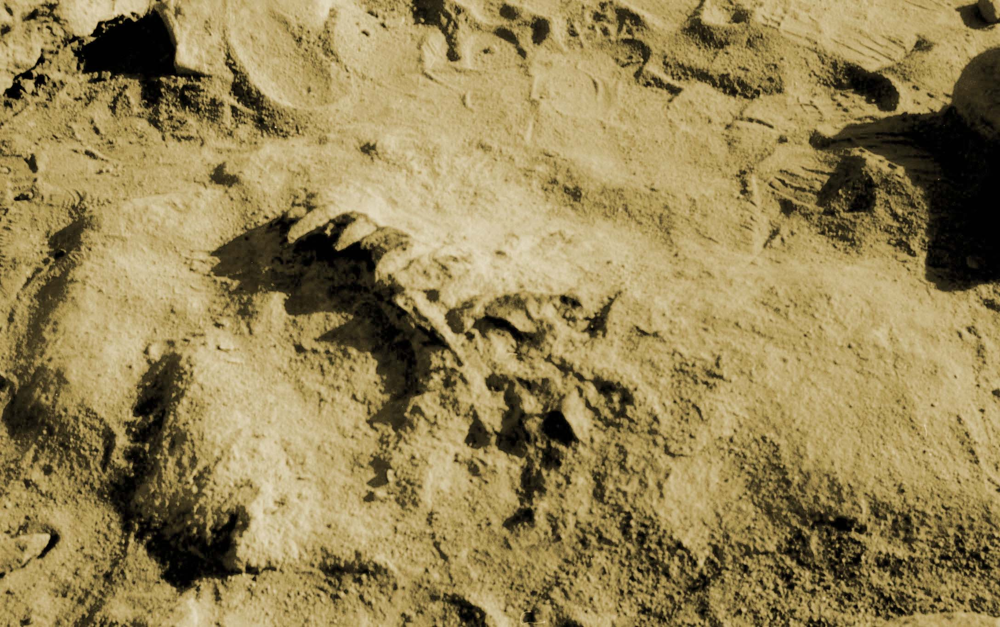
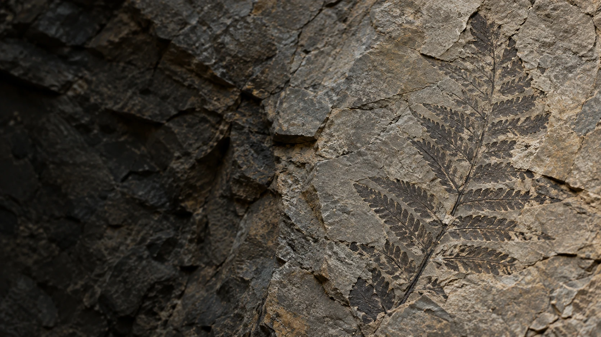
O registro fóssil é uma amostra que ninguém escolheu.
Para um organismo chegar até nós como fóssil, quase tudo precisa acontecer do jeito certo.
O corpo precisa escapar da destruição completa, ser soterrado, atravessar alterações químicas e geológicas, sobreviver milhões de anos e, eventualmente, voltar a ficar exposto onde alguém possa encontrá-lo.
Falhe em qualquer uma dessas etapas e aquele organismo simplesmente desaparece do nosso conhecimento.
É com esse arquivo improvável e incompleto que reconstruímos ecossistemas inteiros.
E uma das melhores qualidades do método é não fingir que o arquivo está completo.
Eoraptor lunensis
O que o osso sustenta.
Em Ischigualasto foi encontrado um esqueleto amplamente preservado de um pequeno dinossauro bípede.
Dele saem proporções, articulações e a relação entre os membros e o tronco.
Os ossos são evidência direta, e é bastante coisa.
Pele, cor e a aparência externa em geral não ficaram na rocha.
Nota
Representação esquelética elaborada para o projeto. A postura mostrada é uma reconstrução baseada na anatomia conhecida; não é uma posição preservada do animal.
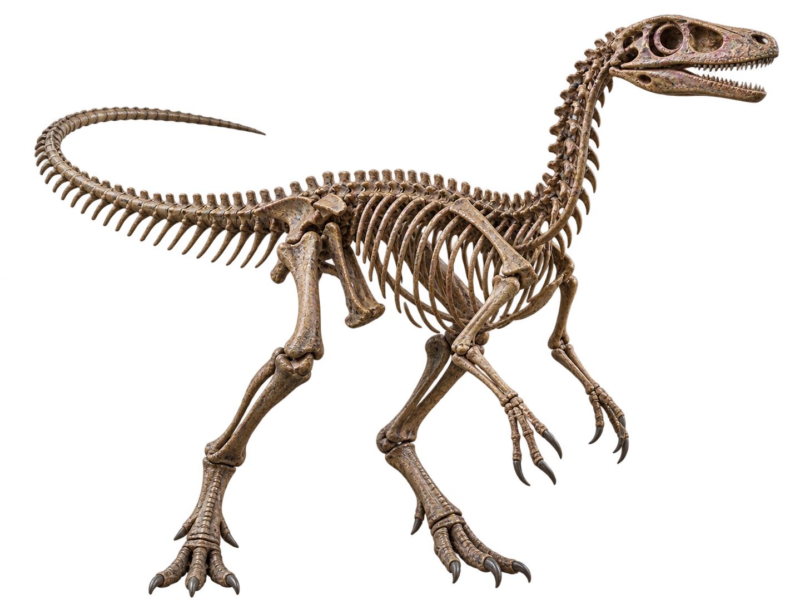
O osso não termina onde começa a imaginação.
Entre o esqueleto e o animal reconstruído entram anatomia comparada, inserções musculares, biomecânica e comparação com organismos relacionados.
Isso restringe bastante o resultado.
Mas não igualmente em todas as partes.
Alguns elementos da reconstrução têm apoio forte. Outros dependem muito mais de inferência.
O importante não é fingir que sabemos tudo. É saber qual parte sabemos melhor.
EORAPTOR LUNENSIS
Sobre o Eoraptor
Um caso em que o fóssil ficou o mesmo e a classificação mudou.
Eoraptor viveu há cerca de 230 milhões de anos na região de Ischigualasto, hoje em San Juan, na Argentina.
Era pequeno e bípede, com uma anatomia útil para investigar as primeiras ramificações dos dinossauros.
Os mesmos ossos foram interpretados de maneiras diferentes ao longo dos anos, e a posição de Eoraptor na árvore evolutiva mudou conforme surgiram novas análises.
Hoje ele costuma ser recuperado entre os sauropodomorfos mais basais, sem que isso encerre a discussão.
O fóssil continua o mesmo. A classificação muda quando surge uma razão para isso — que é exatamente o que se espera de uma hipótese.
Nota científica
Eoraptor já foi interpretado de maneiras diferentes na árvore evolutiva dos dinossauros. Sua posição entre formas próximas à origem dos sauropodomorfos aparece com frequência nas análises, mas as relações entre os primeiros dinossauros continuam em investigação.
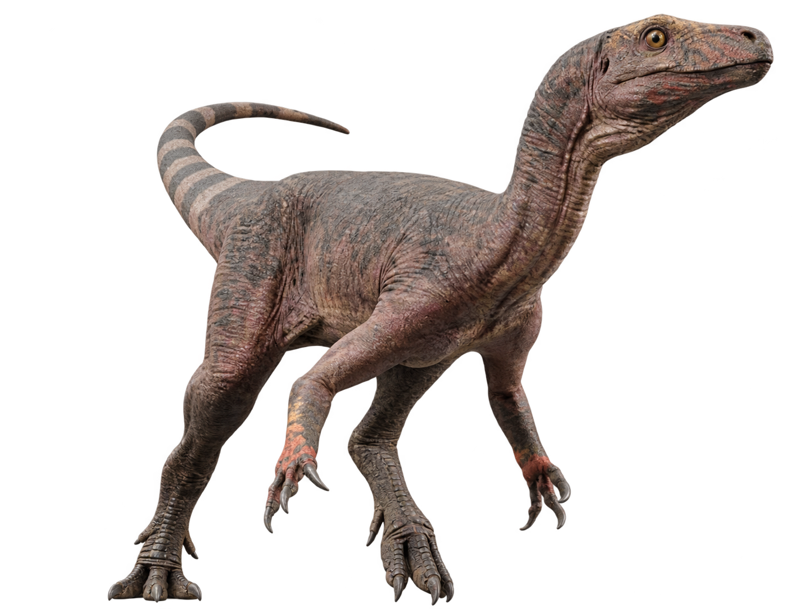
Tempo e local
- PERÍODO
- Triássico Superior
- IDADE
- ≈ 230 milhões de anos
- LOCALIDADE
- Formação Ischigualasto
San Juan · Argentina
Biologia
- LOCOMOÇÃO
- Bípede
- DIETA
- Incerta
- POSIÇÃO EVOLUTIVA
- Frequentemente recuperado entre os sauropodomorfos mais basais; posição discutida.
TAMANHO EM PERSPECTIVA
A palavra “dinossauro” exagera antes mesmo de vermos o animal.
Nesta comparação, Eoraptor aparece com aproximadamente 1,2 metro de comprimento e 0,5 metro até o quadril, ao lado de uma pessoa de 1,70 metro.
A imagem popular dos dinossauros é dominada por animais muito maiores, que surgiriam depois.
Eoraptor pertence a uma fase muito anterior dessa história.
Pequeno, sim.
Pouco importante é outra conclusão — e uma bem menos defensável.
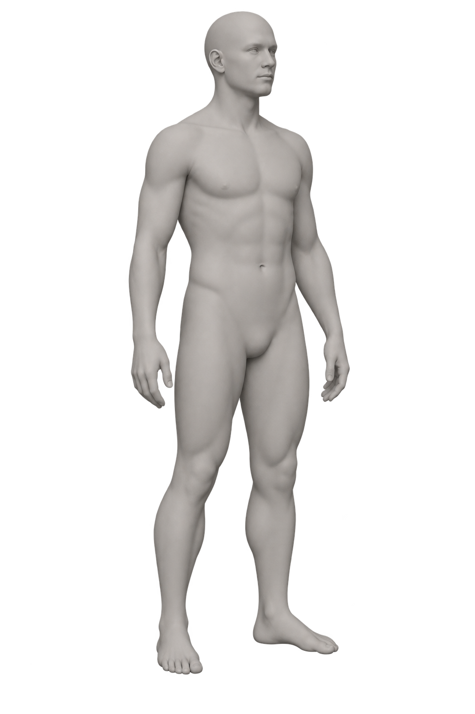
Comparação visual aproximada. O holótipo de Eoraptor foi descrito originalmente com cerca de 1 metro de comprimento. A medida de 1,2 m é a escala adotada nesta reconstrução gráfica; não é uma medição direta confirmada para todos os indivíduos da espécie.
≈ 201,4 MILHÕES DE ANOS
O Triássico termina em crise.
Por volta de 201,4 milhões de anos atrás, uma nova extinção em massa coincide com enorme atividade vulcânica ligada à abertura inicial do Atlântico.
A coincidência temporal está bem estabelecida. Os mecanismos exatos e a sequência de seus efeitos continuam em investigação.
Muitas linhagens desapareceram. Outras permaneceram.
Triássico e Jurássico são nomes que damos a intervalos de tempo definidos no registro das rochas.
As marcas são reais.
A fronteira entre os nomes é nossa.
Fim do capítulo do Triássico.
O Jurássico começa no mesmo ponto.
Jurássico · 201,4 milhões de anos atrás
O Jurássico herda
o que o Triássico deixou.
As linhagens que atravessaram a crise seguiram no mesmo planeta, sob condições que continuariam mudando durante milhões de anos.
Os dinossauros não surgem aqui.
Já existiam.
O que muda é o conjunto de condições, ecossistemas e concorrentes ao redor deles.
Mesmo planeta. Condições em transformação.
Pangeia começa a se fragmentar
Pangeia se divide,
devagar.
Durante o Jurássico, Pangeia passou a se fragmentar.
Surgiram novas margens e novos mares. As conexões entre regiões mudaram.
Nada disso aconteceu de uma vez.
O movimento é lento demais para ser percebido durante uma vida.
Quem mede em décadas conclui que os continentes estão parados.
Esquema de afastamento. As formas são abstratas e não constituem um mapa paleogeográfico exato.
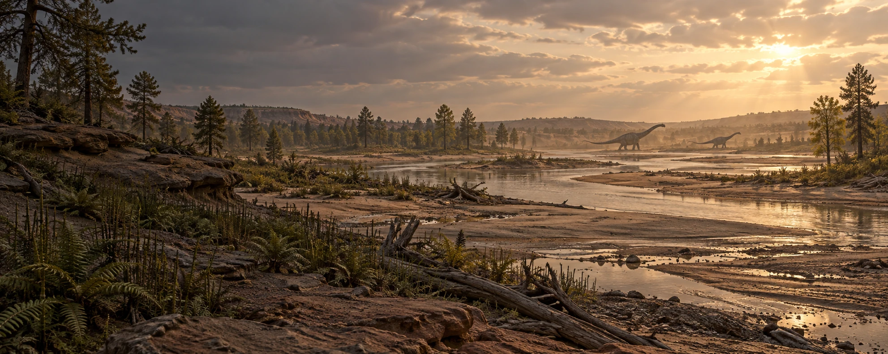
Jurássico tardio · oeste da América do Norte
Esta paisagem
foi deduzida.
Os depósitos da Formação Morrison registram rios cruzando planícies quentes, com vegetação concentrada especialmente onde havia água.
Samambaias, cavalinhas e coníferas fazem parte desse quadro.
Mas a paisagem na tela não foi encontrada preservada.
Ela é uma reconstrução produzida a partir de sedimentos, fósseis vegetais e outras evidências ambientais.
Sabemos bastante sobre o cenário. Isso não significa que conhecemos cada árvore.
Reconstrução conceitual. Não retrata um local exato nem um inventário completo de espécies.
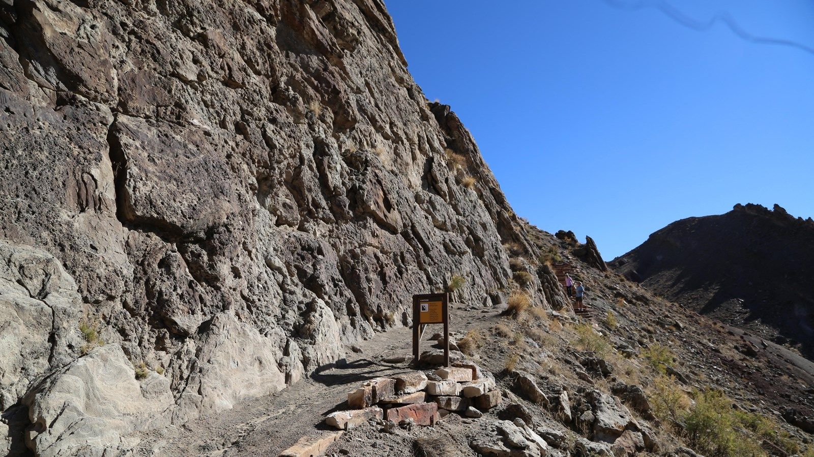
Oeste dos Estados Unidos · presente
Do ambiente, só as rochas.
E nem todas.
Este afloramento da Formação Morrison é de hoje.
Seus sedimentos vêm de sistemas do Jurássico tardio, de cerca de 150 milhões de anos atrás, e preservam vestígios dessa época.
Clima, vegetação e aparência da paisagem precisam ser reconstruídos a partir das camadas e dos fósseis.
A erosão que expõe o arquivo também o consome.
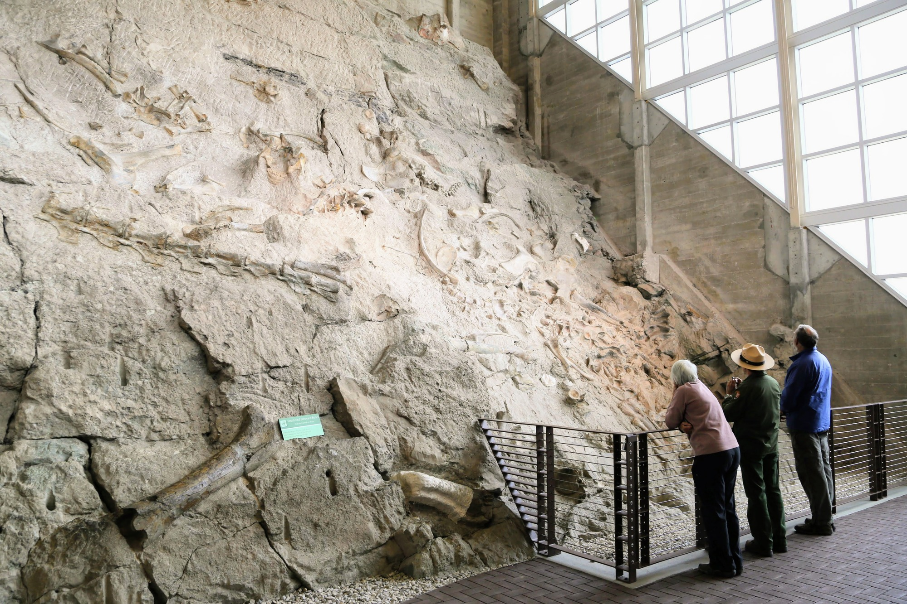
DINOSAUR NATIONAL MONUMENT
Ossos juntos não significam
mortes juntas.
A pedreira do Dinosaur National Monument conserva ossos de várias espécies.
Mas ossos que terminam no mesmo lugar podem ter chegado ali por processos diferentes: transporte pela água, acúmulo ao longo do tempo, soterramento e retrabalhamento.
Estudar esses processos é tafonomia.
Ela impede que a parede seja lida como uma fotografia de um único acontecimento.
Uma concentração de fósseis é evidência de acúmulo. A história desse acúmulo ainda precisa ser reconstruída.
Formação Morrison · Jurássico tardio
Um esqueleto também é
um problema de física.
Pescoço e cauda deste comprimento levantam perguntas mecânicas.
Como o pescoço era sustentado? Em que posição permanecia com maior frequência? Como um corpo desse tamanho distribuía massa e força?
Os ossos limitam as respostas possíveis.
Não escolhem automaticamente uma delas.
Os dentes, concentrados na parte anterior da boca, também ajudam a reconstruir a alimentação.
Que plantas eram escolhidas e exatamente como eram consumidas exige mais inferência.
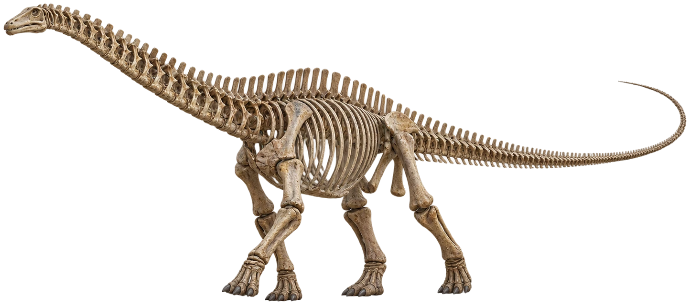
Representação esquelética interpretativa; não é um fóssil articulado em sua posição original.
Da evidência à interpretação
Um esqueleto admite
vários corpos.
O mesmo conjunto de ossos aceita variações no volume corporal, na musculatura e na postura do pescoço.
A anatomia estabelece limites.
Dentro deles, reconstruções diferentes continuam sendo possíveis.
O correto não é esconder a escolha. É dizer onde ela começou.
Formação Morrison · Jurássico tardio
Diplodocus longus
Pescoço e cauda ocupam boa parte de um corpo de cerca de 24 metros.
A estrutura geral vem do material fóssil.
A aparência externa exige mais trabalho.
Músculos, volume corporal e postura podem ser restringidos pela anatomia. Pele, coloração e outros detalhes deixam muito mais espaço para inferência.
Comportamentos específicos são ainda mais difíceis de sustentar.
Um esqueleto pode nos dizer muito sobre um animal. Só não costuma contar como era uma terça-feira na vida dele.
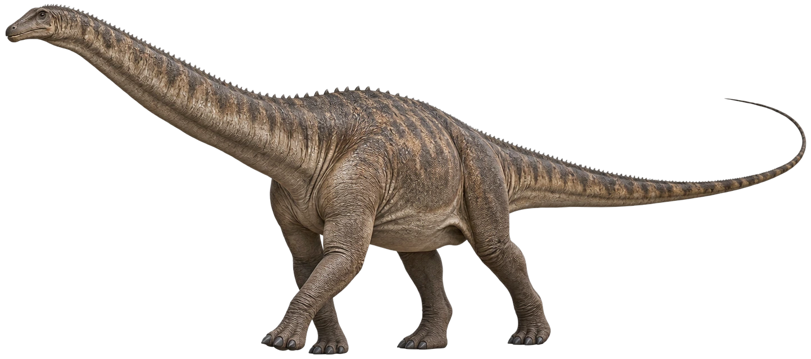
Tempo e local
- PERÍODO
- Jurássico tardio
- LOCALIDADE
- Formação Morrison
Biologia
- COMPRIMENTO
- ≈ 24 m referência aproximada para um adulto
- DIETA
- Herbívoro inferida a partir dos dentes e da anatomia
Reconstrução artística gerada para o projeto. A anatomia fóssil fornece a base; aparência externa e diversos detalhes permanecem interpretativos.
Tamanho em perspectiva
Vinte e quatro metros
é um número simples.
Esta reconstrução mostra Diplodocus longus com cerca de 24 metros de comprimento, ao lado de uma pessoa de 1,70 metro, na mesma escala.
O comprimento acompanha o corpo do focinho à ponta da cauda, e a postura altera sua projeção na tela.
Nós conseguimos entender “24 metros” imediatamente.
Podemos comparar com um ônibus, um prédio ou qualquer outra coisa conhecida.
O problema é que nenhuma dessas coisas está viva.
A medida cabe numa linha. O animal, nem tanto.
≈ 143,1 milhões de anos atrás
O Jurássico termina aqui,
com margem de erro.
Pela escala cronoestratigráfica utilizada pelo projeto, a fronteira com o Cretáceo está em aproximadamente 143,1 milhões de anos, com margem de incerteza.
Os dinossauros continuaram mudando por dezenas de milhões de anos depois dela.
Ao longo desta expedição usamos datas, nomes, medidas e reconstruções para organizar mais de cem milhões de anos de história.
Sabemos uma quantidade extraordinária sobre esse intervalo.
Mas existe uma diferença que vale preservar até o fim:
reconstruir um mundo não é o mesmo que tê-lo visto.